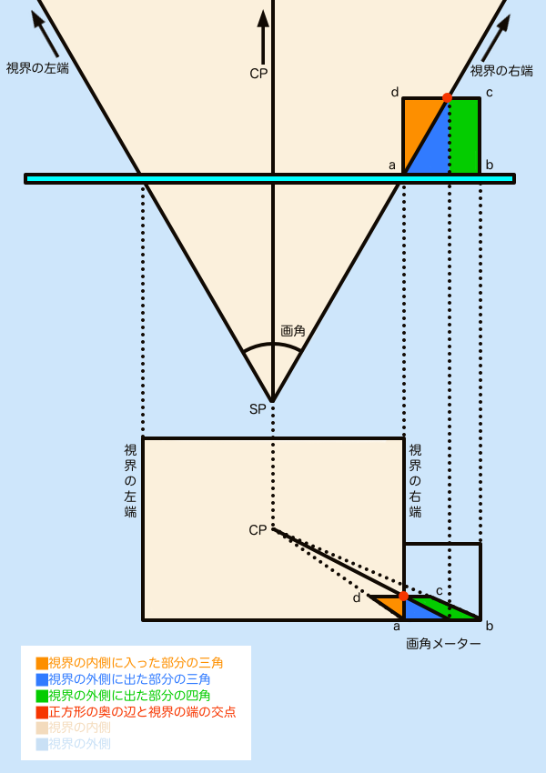
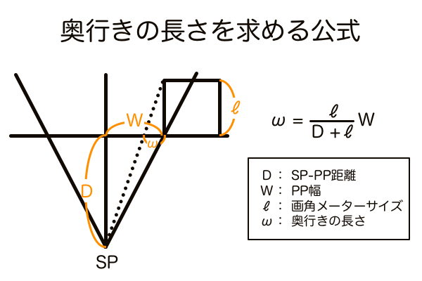
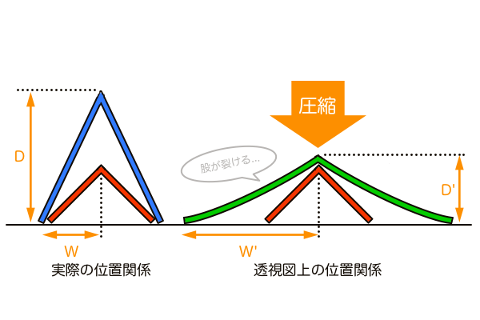
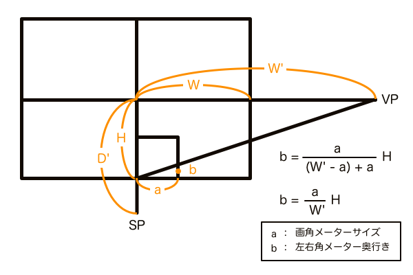

現在開発中の「対角線分割法」は「足線法」の原理を比率計算で短縮して再現することが目的の手法です。対角線分割法はまだ比率計算ができると分かっているというだけで、作図に活用するにはどうすればいいのかが分かっていません。これまでは自身の考察から得られたデータを基に開発してきましたが、今回は足線法に則った既存の手法から考え方を輸入します。
湯浅誠さん（@yuassamakoto）が考案された「ユアッサーの法則」には3つのメーターがあり、左右角メーター、上下角メーター、画角メーターと名付けられています。左右角メーターと上下角メーターは立方体のアングルを設定するもの、画角メーターはその絵の画角を設定するものです。ユアッサーの法則は足線法の原理に基づいており、特に画角メーターは足線法を理解するための要素を余すことなく含んでいます。よってユアッサーの法則の画角メーターを教材として選んでいます。


対角線分割法の開発のための試行錯誤でしたが、副産物として透視図法における「奥行き」を明確に定義できるようになりました。画角の変化によって奥行きの「縮小」と「圧縮」がどう変化するのか、それをどうやって作図するのか、そいういったことが理解できる記事になっていると思います。
画角メーターの使い方
下図を見て下さい。視界の右端に配置された正方形が画角メーターです。ユアッサーの法則では最初に画角メーターで画角を設定します。設定方法は、予め作っておいた画角メーター目盛りのテンプレート（後述）からCPに向けて直線を描くだけです。画角メーターの原理は、平面図で位置関係を把握して、それを透視図と対応させながら考えます。透視図と平面図では、PPと一致する距離にあるもの（正方形の手前の辺のこと）は等しい寸法で描くことができます。この仕組みによって平面図と透視図を対応させて画角メーターを読み取ります。

図中の赤点を見て下さい。この赤点は、視界の境界線と画角メーターの奥の辺との交点で、画角を測定する基準となるものです。この赤点から垂線を下ろせば、CPからの距離をPP上に作図できます。そして「PPと一致する距離にあるものは等しい寸法で描くことができる」という性質により、垂線を透視図の方まで下ろしていけば平面図のPP上にある点と同じ点を作図できます。これが平面図と透視図を対応させるための架け橋となる部分です。後で説明しますが、この赤点が「画角メーター目盛り」となります。
透視図法では「遠くなるほど小さく見える」ことと「視線と平行なものは無限遠で消失点に収束する」ことを踏まえると、先ほど作図したPP上の点から消失点（この場合CP）に直線を描くことで、その直線と作画フレームとの交点の位置にパースに乗った赤点が作図できます。この赤点は画角メーターの奥の辺上の点なので、これがそのままパースに乗った正方形の奥行きの全長となります。赤点（画角メーター目盛り）の位置はSP角（画角）の大きさによって移動するので、予め画角メーター目盛りのテンプレートを作成しておけば画角をコントロールできるというわけです。
あとは頂点a、bとCPを直線で繋ぐとパースにのった正方形の完成です。この正方形を基準にすることで設定した画角での正方形を量産できるようになります。左右角メーターと上下角メーターを、画角メーターと同じサイズで描いておけば、画角メーターで作図した正方形をそのまま再利用できるので効率的です。ちなみに、その正方形を使ってDP（距離点）を作図しておけば左右角メーター、上下角メーターを画角メーターと異なるサイズで描いても、同じ画角の正方形を作図できます。
画角メーター目盛りのテンプレートの作り方
平面図と透視図を対応させて画角を測定する方法は分かりましたが面倒です。効率的に画角を測定するには画角メーターメモリのテンプレートを作っておくことです。そうすると透視図上だけで画角の測定ができるようになります。
画角メーターは視界の右端でPPに密着する距離に置かれた正方形で、SPからの視線はその画角メーターを貫通する状態になります。このとき視界の内側に入り込んだ部分と、視界の右半分の領域で作る三角形は相似の関係にあります（図のオレンジの部分）。 画角メーターで空間全体の画角を測定できるのは、相似の関係を利用して実際の空間での視界の範囲を正方形の中に再現しているからです。そしてSP角（画角）が10〜90°のときの視線が貫通する点を画角メーターの目盛り（図中の赤点）としてテンプレートを作っておくことで、いちいち平面図と透視図を対応させる手順を踏まなくても画角を設定できるようになります。
このテンプレートは画角測定する度にtan(θ/2)で計算しなくて済むよう、正方形を16分割して、さらにその1マスを3分割や2分割して、計算値に近似した点を求めておくことで使いやすくしたものです。ユアッサーの法則の本家の理論なので覚えておきましょう。

画角メーターは絵の最大画角を設定するもの
画角メーターは画面右端下側に配置されることを前提に説明してきましたが、そこ以外に配置することはできると思いますか？結論から言えば、可能です。ただし可能というだけで特に意義はありません。それでは、画角メーターが画面右下に配置される理由を考えてみましょう。
まず画角メーターが画面右下以外に配置された例を挙げます。オレンジが画面右下に配置された画角メーターで、紫が右端ではあるけど下側ではない位置の画角メーターです。どちらの画角メーターも目盛りからCPに直線を繋げば画角設定ができますが、あくまで画角メーターがある位置での画角を設定したに過ぎません。紫はオレンジに比べてCPに近い位置にあるので、オレンジよりも望遠気味の画角を設定したことになります。

本家のユアッサーの法則では当然ですがオレンジの画角メーターを使っています。絵を描くときに画角を設定する場合、普通は主役となる被写体の見え方をコントロールするもので、特別な演出意図がない限りその被写体はすぐ近くの地面の上にあるものだと思います。被写体の見え方をコントロールするための被写体付近の画角を測定するなら、視界の下端と地面との交点に立てたPPの位置に画角メーターを配置するべきです。となると、透視図上では画面右下ということになります。
紫の画角メーターは画面中央あたりの画角を測定することになりますが、そのような構図の絵にはどのような意図があるのでしょうか。このシチュエーションを言葉で表すと「カメラが遠くの被写体を撮影している」となります。この言い方だとオレンジの画角メーターで近くの画角を測定し、その画角で遠くの被写体を見ると望遠気味に見える、と言い換えることもできるのでオレンジの画角メーターの領分です。紫の画角メーターの機能を言葉で表すと「遠くにある被写体は画角何°で見える」という意味になり、回りくどくて使い道が思いつきません。
よって画角メーターがどの位置にあってもその位置の画角測定ができますが、絵を描くという目的のために使うなら画面右下に配置するのが最も賢いということです。そしてこの位置で測定する画角は、その絵における「最大画角」です。画角はCPからの距離で決まるので、画面内で最もCPから離れた位置に画角メーターを配置することで最大画角を測定することができます。補足として、シフトレンズで画面をスライドさせると3点透視でなくともELが画面中央からズレた位置になることがありますが、その場合もCPから最も離れた位置、つまりELから遠い方の画面端に画角メーターを配置するだけです。
余談。横長フレームが一般に採用されているのは人間の視野に合わせて絵を描くためです。仮に縦長フレームの絵を見るときもおそらく横長フレームに収まる範囲しか認識しておらず、縦長の絵の全体を見るときはカメラワークのように視線を上下に送るものだと思います。画角メーターは左右端の画角を設定するため左右いずれかに配置する方が現実的です。ただ、上下端に配置すれば上下の幅を基準にした超広角の絵を描けるということなので、それは臨機応変に決めます。
奥行きの「圧縮」と「縮小」が画角によって変化する理由
奥行きの圧縮も縮小も、PPに投影された像を透視図上で見たときにどう見えるかという言い回しであってあって、これらを平面図で見るとただただ当たり前のことが分かるだけです。その当たり前のことをPPに投影するとき何が起きているのか、そこに注目すれば奥行きの圧縮と縮小を明確に定義できます。
奥行きの縮小は、平行な線は無限遠では1点に収束するという性質により発生します。奥行きの縮小の量は、広角では多く、望遠では少なくなります。これは被写体がCPと視界端との間のどの位置にあるかを考えれば説明がつきます。例えば一本の棒が視線と平行方向に、そして視界端の地面に置かれているとします。このときの棒の先端の視界端からの距離が大きいほど、透視図上では画面端から離れているということで、よりCPに近い位置に作図されます。画角が大きいほど画面の端は棒の先端から大きく離れていくため、透視図上で見るとCPに収束する奥行きの縮小がより極端に作図されます。これが広角で立方体が歪に見える理由です。奥行きの縮小を数学的に定義するなら「平面図上で奥行き方向に向かうほど視界が広がるその増加量に比例する、透視図上での収束の量のこと」です。


奥行きの圧縮は、単純に観測者の立ち位置から立方体の側面がどれだけ見えるかによって変化します。奥行きの圧縮の量は、広角に対して望遠に近づくほど多くなります。なぜなら画角はCPからの距離によって決まるという性質があるため必然的に望遠画角はCPの近くということになり、すると望遠で見る立方体は観測者の正面に近い配置となってその立方体の側面が見えにくくなるからです。奥行きの圧縮と言われているからといって本来の立方体の寸法より短く見えるわけではなく、ただ側面があまり見えない位置に立方体があるというだけです。奥行きの圧縮を数学的に定義するなら「CPから被写体までの距離に比例する、被写体側面の見える面積の変化量のこと」です。ちなみにこの定義は、左右角メーターと上下角メーターの奥行きの長さの決め方をそのまま言葉にしたものとも言えます。


望遠のとき消失点が画面外に移動する理由
さてさて、ここまで色々と解説してきましたが、それらの解説は全て本来の目的の副産物です。本題は対角線分割法に応用するための試行錯誤なので、ここから先は無理やり別のイメージに置き換えたり、ひたすら比率計算をしたりという内容なのでご注意ください。
望遠の視界を透視図に落とし込むとはどういうことかを4つのV字模型に見立てて再現してみました。まず90°の小さなV字模型（赤）と、それと同じ幅を持つ望遠のV字模型（青）を用意して重ねて置きます。この状態を言い表すなら、同じ範囲（PP幅）が見えているときは望遠の方が遠くから見ている、という感じです。

しかし青の望遠V字模型では立方体が作図できません。なぜなら正方形は90°、望遠V字模型は90°ではないからです。望遠の視界を透視図法に落とし込んだ場合、画面端は視界端ということになりますが、もしその位置に消失点を設定して作図してしまうと頂点角が90°以下の正方形ではない図形になります。ということは、望遠の透視図上で90°方向の消失点を設定しようとすると、画面端よりももっと離れた位置に設定せざるを得ないということです。まずここで覚えて置かないといけないのは「正方形の消失点VP（もしくは距離点DP）はSPの位置から90°方向にある」ということです。
そのVPの位置を知るために使うのがオレンジのV字模型です。オレンジのV字模型は、青の望遠V字模型と同じ高さを持つ90°のV字模型です。オレンジのV字模型の両足は、青のV字模型のSPの位置から90°方向にあるVP（もしくはDP）の位置に着地します。つまりそれが望遠のときの画面外にあるVPの位置ということになります。赤のV字模型の着地点と比較してもかなり離れた位置にあります。しかしオレンジのV字模型で作図しても望遠の絵ではなく画角90°の絵になります。なぜなら赤のV字模型に対して少し後ろから見ただけの画角90°の風景でしかないからです。青のV字模型のときの望遠の絵を描きたければ、赤のV字模型と同じSPから見て、オレンジのV字模型と同じVPを使って作図する必要があります。

この2つのSPとVPの位置条件を満たすのが緑のV字模型です。青のV字模型を上から押さえつけて赤のV字模型と同じ高さまでグニャ〜っと潰すと、両足が開いてオレンジのV字模型と同じくらい広がる、というイメージです。VPの正確な位置が知りたければ三角関数やユアッサーの法則で求めることができますが、4つのV字模型をイメージすることで望遠のときの消失点が画面外に位置することの意味が理解できるはずです。

実際は押しつぶしているのではなく、青のV字模型を斜めから見て長さが短縮されて赤のV字模型と一致するまで傾けた角度からオレンジのV字模型を見たものをPPに投影しています。ですが結果としてPPに投影された像と押しつぶした緑のV字模型は同じ形状となっているので問題はありません。

透視図法の空間を理解するための「4つのV字模型」
これが今回の記事での収穫物です。なんとかして活用せねば。

対角線分割法への応用
4つのV字模型を応用して対角線分割法による計算のみで正方形の奥行きを求めてみます。かつて計算のみで作図する手法として「三角関数パース理論」を考えていましたが、その頃に比べてシンプルな数式にはなっています。でも結局は電卓頼みとなってしまっている。



ユアッサーの法則で答え合わせをしてみたところ奥行きの長さは一致した。でも奥行きが分かってもこの次の一手はまだ見つかっていない。正方形を作図してDPを求めて、後は正方形を量産する、となると初めからユアッサーの法則を使っていればいいという話になる。対角線分割法完成の道のりはまだまだ険しい。

ただ、これだけは言える。1点透視図法の正方形の奥行きの長さを紙の上だけで求める手法を開発した！！！ 現在これができる手法はユアッサーの法則、対角線分割法、三角関数パース理論だけだと思う。少しスッキリした。おまけとして、せっかくユアッサーの法則を題材に選んだのでサムネもユアッサーの法則を使って描いてみた。パースを取るまでのサムネメイキングの工程をどうぞご覧ください。